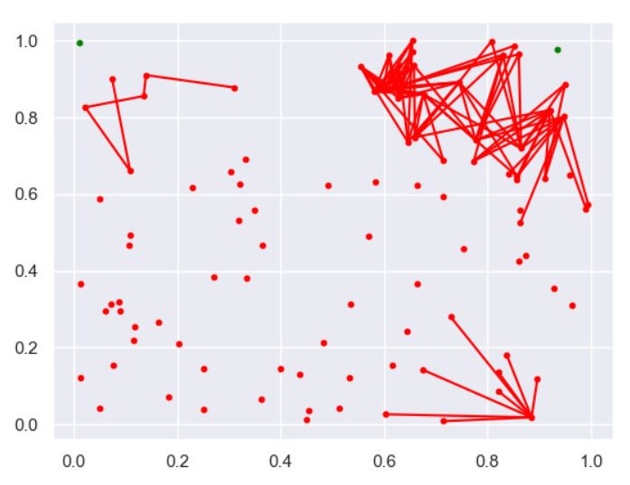
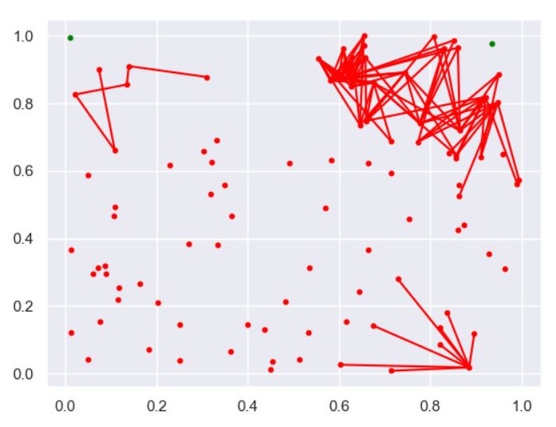

Virus Simulation
Completed March 2020
 

Project Overview
This project was inspired by an activity performed in the "Python Data Science Handbook" by Jake VanderPlas which I worked through over the course of four months in an effort to extend my knowledge of python into deeper and more applicable subjects.
The activity involved using Numpy methods to calculate the distance between points. Given that the Coronavirus outbreak was in full swing and social distancing was a topic discussed at length, I figured an interesting extension of the activity would be a disease spread simulation. The program randomly generates N points and constructs an NxN matrix with the distance between any two points. One point is assigned an infected tag, and the probability of spread is determined by the distance between points through a variable map. I had not covered Matplotlib at the time of exploring this project, but I managed to string together functional visualization tools.
The variable map related to the distance between points was rudimentarily experimented with, and the program showed that reduced contact reduced exponential growth significantly. Small changes in the map resulted in dramatic effects in the ability for the infection to spread.
While this project was rather simple and somewhat underdeveloped, it was an excellent exercise in working with Numpy that will no doubt come in handy for future projects. I also see this program as having very high potential for expansion as my skills with Matplotlib, machine learning, and general statistics develop.
Improvements in Future Development
- More powerful visualization tools: The extent to which I implemented visualization tools was in the "real-time" view of the spread. A necessary addition would be the implementation of visuals that represent the simulation as a whole to give insight into the bigger picture and "flattening the curve".
- Addition of death and max care capacity: The current program assigns points three states: uninfected, infected, and recovered. A nice touch would be adding a permanent death state to those who do not recieve "care" because too many points are infected at once. This would make the spread more reflective of an actual pandemic situation.
- Adaptive spread function: The ability for the program to look at current and past data to refine and adapt the implemented variables would be a very cool feature and excellent exploration of machine learning techniques.